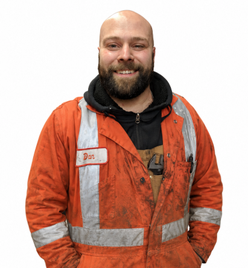
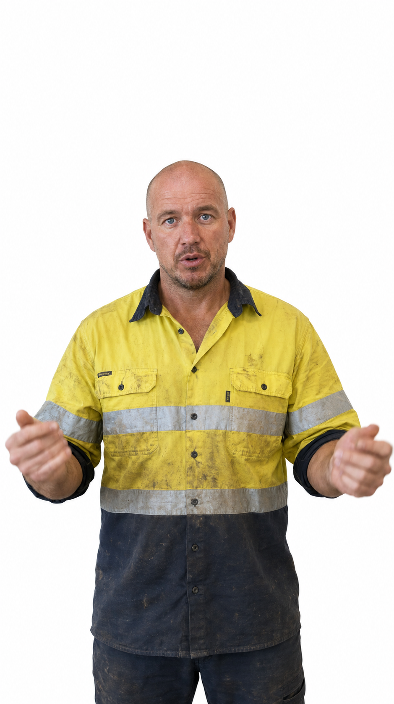
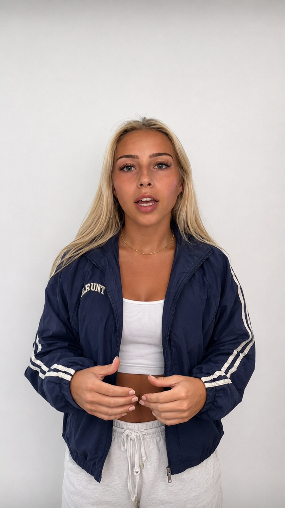
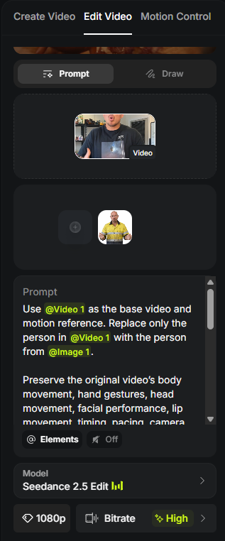

@Video1
Motion
Higgsfield + Seedance 2.5 Edit
Create Realistic AI TikTok Shop Videos
Turn a motion reference + character image into a realistic AI video using the Titans workflow.
Video = MotionMovement, camera, framing, timing, and performance.
Image = IdentityFace, hair, body, clothing, product, and character look.
Prompt = RulesWhat must stay locked and what gets replaced.
@Image1

Result
Locked
Prompt hierarchy
START HERE
The 5-step Titans workflow.
Follow the steps in order so the motion reference, character image, Higgsfield setup, prompt, and final review all work together.
01
Get Motion
Record your own reference video or use an existing reference clip you have permission to use.
02
Get Character
Use an existing character/reference photo or create a new character with the Titans Character Builder.
03
Open Higgsfield
Open Higgsfield and select the recommended Seedance workflow.
Open Higgsfield
04
Attach + Prompt
Attach the motion video as @Video1, attach the character image as @Image1, then generate your prompt below.
05
Generate
Create the video, review the result, make adjustments if necessary, then export.
Follow the order
Motion video → Character image → Higgsfield → Prompt → Generate
Walkthrough video
Watch the workflow once.
See how the Titans process is used from the motion reference to the character image, prompt, and final video setup.
Step 1
STEP 1 - Choose Your Motion Reference
The reference video controls the movement blueprint. It does not need to look like your final character.
Movement
Camera movement
Framing
Timing
Body positioning
Performance
Record It Yourself
Best for maximum control and originality. Record the exact motion, timing, camera behavior, and framing you want the AI character to perform.
Existing Reference Video
Use an existing reference clip that you have permission or rights to use as the motion reference.
Download a TikTok Reference Video
Paste a public TikTok video link to get the highest-quality clean version available.
Download HD Video
No watermark • Highest quality available
After downloading, upload the MP4 to Higgsfield as @Video1. It becomes the motion, camera, framing, timing, and performance reference for your generation.
The person in the motion video does not need to look like your final character.
The motion video primarily controls movement and camera behavior.
Good reference video
Clean & Stable
The camera stays still, the subject is sharp and well lit, and the background is fixed.
GOOD ✓ Stable camera
Good lighting
Sharp subject
Fixed background
Bad reference video
Shaky & Unclear
Shaky camera, blur, changing lighting, and shifting framing give the model too much unstable information to track.
BAD × Shaky camera
Poor lighting
Motion blur
Changing framing
Step 2 / Character image
STEP 2 - Choose or Create Your Character
Your image controls who appears in the final video. Use a clean existing reference image or create a new Image1 character below.
Use an Existing Image
Upload a clean reference image of the person or character you want used.
Create a New Character
Use the Titans Character Builder below to generate a new character reference.
Body-
Face-
Hair-
Eyes-
Skin-
Outfit-
Product sellers: be specific before you copy.
If the image is meant to sell or show a product, put the exact product/outfit requirement in the field on the left. For hats, shirts, jackets, glasses, jewelry, bags, or uniforms, the product needs to be named directly or the image model may invent the wrong item.
Use the start frame.This gives the image model the exact original pose and angle.
Image first.This prompt creates Image1. The Seedance prompt below handles the video replacement.
Reroll details.Same age, gender, and profession can produce different realistic combinations without leaving that character context.
age
gender
profession
weighted body
compatible face
age-compatible hair
random eyes
outfit
product detail
Character examples
Good vs Bad Character References
Strong Image1 references are simple, realistic, and easy for the model to keep consistent across frames.

Good reference
Mechanic-style worker
Clear subject
Simple readable outfit
Realistic lighting

Good reference
Light-blue outfit
Clean silhouette
Easy clothing shape
Natural skin texture

Good reference
Blonde college woman
Distinct identity
Consistent studio lighting
Usable outfit detail
Bad character examples
These can look impressive as still images, but they are harder for video models to keep stable because they contain too many tiny details, complex hands, layered clothing, and elements that can flicker or change frame-to-frame.

Bad reference
Low-res and AI-looking
Low-quality source image
Poor proportions
Obviously AI-generated appearance

Bad reference
Texture overload
Too many straps and zippers
Complicated hands
Heavy texture can flicker

Bad reference
Hard to keep consistent
Excess jewelry and layers
Tiny lace and hair details
Hands/fingers are difficult
Step 3 / Higgsfield setup
STEP 3 - Set Up Higgsfield / Seedance
Load the motion video and character image before you paste the Titans prompt. Beginners should match this setup first.
Open Higgsfield / Seedance
Open Higgsfield
Start in the video editing flow.
Select Seedance / recommended editing model
Use the recommended Seedance edit workflow for this helper.
Add motion reference as @Video1
This controls movement, camera, framing, timing, and performance.
Add replacement reference as @Image1
This controls the defining appearance of the selected person, outfit, vehicle, product, or environment.
Keep sound/audio generation off during testing
Focus first on clean motion, face, hands, product, and clothing.
Paste the generated Titans prompt
Use the Step 4 builder below after both references are attached.
Generate
Review the output before exporting or editing.
Higgsfield
→
Edit Video
→
Seedance 2.5 Edit

Model: Seedance 2.5 Edit
Mode: Prompt
Resolution: 1080p
Bitrate: High
Sound: Off
Step 4 / Video prompt
STEP 4 - Build Your Video Prompt
The references provide the motion and identity. The prompt tells the model what must remain consistent and what should change.
Attach first.Select the reference video and image inside Seedance before pasting.
Use @ references.Choose Video1 and Image1 from the @ menu so the green chips appear.
Keep it strict.Do not add style labels unless they describe a concrete change.
Step 5 / Generate + review
STEP 5 - Generate & Review
Run the generation, then check the failure points before exporting or posting.
Before export, check this.
Identity stayed consistent
Hands and face look natural
Clothing/product stayed consistent
Motion matches the reference
Camera movement stayed accurate
No flickering or warping
Background stayed believable
Product details are correct
Final Edit
Run the finished video through your normal editing workflow such as CapCut to trim the clip, add captions, sound, overlays, branding, or other final edits.
Download result
Edit in CapCut
Prepare for posting
Examples / Reference to result
Reference → Image → Final Result
The point is simple: this movement plus this character image becomes the final AI video when the prompt keeps the hierarchy locked.
Person Replacement Case Study
Complete exampleMotion Reference
Character Image
Final AI Video
More results made with this workflow.
These clips stay secondary so the page teaches the process first and shows extra proof after.
Same core idea.
Preserve the motion video, replace only the selected subject or object, and keep the final clip stable.
Final quality checklist
Use it only when the reference hierarchy holds.
The final export should look like the same reference clip with a clean replacement. If identity, hands, face, clothing, or background drift frame-to-frame, adjust the references before over-prompting.
Run again when the output changes the scene.
Background shifts, camera angle changes, clothing morphs, face flickers, hands melt, or timing no longer matches the original video.
Use it when the reference hierarchy holds.
The motion, camera, timing, framing, and scene match the reference video while the replacement identity stays stable from Image 1.
Advanced / Reference rules
Understanding Your References
This is the deeper reason the workflow works. The uploaded references already carry most of the information. Your prompt should enforce the hierarchy and stop the model from changing the wrong things.
Video controls
Motion
Body movement, gestures, posture, head turns, facial timing, lip movement, pacing, and scene behavior.
Video controls
Camera
Camera angle, framing, movement, perspective, subject scale, composition, background, and timing.
Image controls
Identity
Face, hair, body proportions, skin tone, clothing, colors, products, and overall person appearance.
Prompt controls
Boundaries
Only replace the intended subject. Do not restage, redesign, improve, reinterpret, or change the scene.